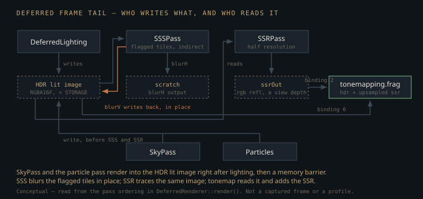

Monograph · Tree · ← Module hub · SSR & SSS
deferred
SSR & SSS
Half-resolution reflections; subsurface blur on classified tiles.
Two effects, one bet
`SSRPass` and `SSSPass` make the same wager: everything they need is already in the frame. Each reads the HDR lit image plus G-buffer attachments and nothing else — no acceleration structure, no second geometry submission. Both are Slang compute modules built through the `rtc` helpers the RT techniques share, and both are created unconditionally by `DeferredRenderer` and recorded on every deferred frame, timed as `sss` and `ssr`. What they no longer share is a cost model. SSR traces at half resolution; SSS runs only on the 16×16 tiles the G-buffer pass flagged for a subsurface material, so a frame without one dispatches no workgroup at all.
They run in that order, SSS then SSR, and on one image. SSS writes its blur back into the lighting output in place; SSR is handed that same image, traces it, and then writes its own result back into it in place too, beside the two images the lighting pass wrote for it:
m_ssrPass->setLitScene(m_lightingPass->getOutputImage(), litOutput, m_lightingPass->envSpecularView(),ohao/render/deferred/deferred_renderer.cpp:637So a reflection of skin shows the skin blurred once, as the camera sees it, and post-processing — bloom and TAA included — reads the lighting output with both effects in it. Measured with `render_bench` on an RTX 5070 Laptop GPU (2026-10-25, a run flagged noisy by outside load), `cornell_720p` — where no material has `subsurface` — spends 0.004 ms in `sss` and 0.008 ms in `ssr`, against budgets of 0.02 and 0.04, in a 0.85–0.87 ms frame; `helmet_game_1080p` spends 0.079 ms in `ssr`.
The reflection ray marches in world space
`SSRPass` dispatches two entry points. The first, `trace` in `postprocess/ssr.slang`, runs at half the frame's size rounded up: half-resolution pixel $q$ traces for full-resolution pixel $2q$. The second, `resolve`, is the next section.
if (!rtc::createComputePipeline(m_device, "postprocess_ssr.slang.spv", "trace", m_descriptorLayout,ohao/render/deferred/ssr_pass.cpp:86The march is linear in world space, not in screen space. Its length is 20 world units, in the push constants' `cameraPos.w`, and the loop is a fixed 64 iterations, so every step advances the ray by exactly 0.3125 units regardless of where the pixel is or which way the reflection points:
m_params.cameraPos = {0.0f, 0.0f, 0.0f, 20.0f}; // w: the march's length in metresohao/render/deferred/ssr_pass.cpp:92const float4 clip = mul(pc.viewProj, float4(rayStart + reflDir * (stepSize * float(i + 1u)), 1.0));shaders/postprocess/ssr.slang:66Each sample is pushed through `viewProj` and divided by w to get a UV. Marching in world space and projecting per step is the cheap way to write SSR, and it costs uniform screen coverage: a reflection heading into the screen resamples one texel dozens of times, while a ray skimming along the view plane can jump many pixels per step and walk straight over a thin occluder. A screen-space DDA has the opposite, better behaviour — one step, one pixel.
The hit test asks whether the ray's post-projection depth has just crossed the stored depth by less than `thickness`:
if (ndc.z > sceneDepth && ndc.z < sceneDepth + pc.params.x)shaders/postprocess/ssr.slang:73Both sides are non-linear device depth. The comparison is self-consistent — `ndc.z` and the `D32_SFLOAT` G-buffer depth live in the same space — but the threshold is 0.05 *of the projected depth range*, not 5 cm, as the push block's own field documentation says:
m_params.params = {0.05f, 0.0f, 0.0f, 0.0f}; // x: thickness (NDC depth)ohao/render/deferred/ssr_pass.cpp:93Perspective depth compresses distance, so the accepted slab is razor-thin near the camera and widens sharply further out: far-field rays are accepted well behind the real surface while near-field contacts are rejected. Anyone linearising both sides must retune `thickness` into world units at the same time, or SSR goes dark.
A second, smaller mismatch sits in the same comparison. The G-buffer — depth attachment included — is rasterised through a TAA-jittered projection:
jitteredProj[2][0] += jitter.x;ohao/render/deferred/deferred_renderer.cpp:263while `SSRPass` is handed the clean, unjittered matrix:
m_ssrPass->setCameraData(m_proj * m_view, m_cameraPos);ohao/render/deferred/deferred_renderer.cpp:636so every UV the march computes is offset from the depth buffer it reads by that frame's sub-pixel jitter, in a different direction each frame. Without TAA the offset is exactly zero; the `model_viewer` example in deferred mode, the `ohao_game` host and a capture whose `post` names `taa` all enable it.
Two thresholds decide which pixels get a ray at all. Rough dielectrics are skipped, metals always traced:
if (roughness > 0.7 && metallic < 0.5) // rough non-metals (skin, fabric): nothing visibleshaders/postprocess/ssr.slang:53and sky is the G-buffer position's clear value, all four channels exactly zero — so a real dielectric sitting on the world origin is sky too:
clearValues[0].color = {{0.0f, 0.0f, 0.0f, 0.0f}}; // Position (rgb) + Metallic (a)ohao/render/deferred/gbuffer_pass.cpp:132A hit takes the lit image at the hit's UV and a confidence $c$ that falls with march distance and roughness (at most 0.8). The trace writes the radiance premultiplied by $c$, and $c$ itself; no Fresnel, no weight of its own. A sky pixel, a miss and a skipped rough dielectric write zero:
ssrOut[q] = float4(litScene.SampleLevel(linearSampler, uv, 0.0).rgb * confidence, confidence);shaders/postprocess/ssr.slang:77The resolve replaces the environment's reflection
The lighting pass has already lit every pixel's reflection: the environment and RT GI's bounce light along it, $\text{incoming}$, times the split-sum weight with specular occlusion, $W$ (the specular lobes' directional albedo from OpenPBR's energy tables times `specularOcclusion`; the deferred lighting unit, "Image-based lighting"). A trace hit is a better estimate of that same incoming light, so adding it on top would count the reflected energy twice; that is what an earlier tonemap-time `+=` did, and on the helmet room it brightened the helmet against its left wall from 0.676 to 0.734. The lighting pass therefore writes two more attachments beside the lit image, $E = W \cdot \text{incoming}$ and $W$:
o.envSpecular = float4(envSpecular, 0.0);shaders/core/deferred_lighting.slang:275and `resolve` (`postprocess/ssr_resolve.slang`, full resolution, the lit image in `GENERAL` and back) blends the reflection toward the trace by the confidence, under the same weight, applied once:
lit[pixel] = float4(max(c.rgb + W * r.rgb - r.a * E, float3(0.0)), c.a);shaders/postprocess/ssr_resolve.slang:71The weight is computed outside the environment's branch, so a scene without an environment (Cornell) still gets correctly weighted screen-space reflections, with $E = 0$ there. The resolve is also where the half resolution is undone. Each full-resolution pixel reads the four nearest trace samples; if none has any confidence it reads nothing more. Otherwise it weights the four bilinearly and by how close the distance from the camera of each sample's surface (the G-buffer position at $2q$) is to its own, within 5 %. Where none is the same surface it takes the closest, rather than averaging a reflection across an edge:
const float w = (o.x == 1 ? f.x : 1.0 - f.x) * (o.y == 1 ? f.y : 1.0 - f.y) * max(0.0, 1.0 - err / (0.05 * z));shaders/postprocess/ssr_resolve.slang:61With SSR off nothing runs, and the frame keeps the environment's reflection exactly as lighting wrote it. With it on, the helmet room measures 0.471 against 0.473 off (the path tracer: 0.534): where the trace hits, it replaces radiance of about the same brightness rather than adding to it.
The Hi-Z tracer that did not ship
A second, considerably more serious SSR used to exist in the tree — McGuire–Mara screen-space ray tracing: descend a hierarchical depth pyramid, step coarse where the ray is clear, refine on a suspected hit, binary-search the crossing, with roughness and edge fades. It lived under `shaders/_disabled/`, loaded by no C++, and was deleted with the rest of that archive; `git log -- shaders/_disabled/ssr.comp` has it if the better algorithm is ever wanted.
The Hi-Z tracer needs a pyramid of the nearest depth over the whole frame. The one pyramid the deferred frame builds is GPU culling's, and it holds the *farthest* depth of the early G-buffer pass only — the reduction an occlusion test wants, built before the late draws land — so it cannot serve a ray march. The 64-step linear march was kept because it needs only the G-buffer that already exists, and halving its resolution cut its cost by four without changing the algorithm. The price is exactly the artefact class above: distance-dependent thickness and non-uniform screen sampling. Reviving the Hi-Z path is a pyramid-generation problem (a min-depth pyramid of the final depth, after the late pass), not a shader problem.
Skin is a material property now
`SSSPass` used to guess. It ran a full-screen blur keyed on an albedo-chromaticity test for skin, which took Cornell's red wall for skin and blurred it every frame. The guess is gone. A material opts in through a `subsurface_weight` on `Material`, the scene-file component, and on `render::MaterialDesc`, packed into row 2, z of the material table:
bits(d.roughMetalTex), d.emissiveStrength, d.subsurface, bits(d.occlusionTex),ohao/render/scene/material_table.cpp:41The G-buffer carries it to the screen as the negative half of the normal target's fourth channel (the positive half is emissive luminance; an emissive surface takes no subsurface), and every visible fragment of such a material flags its 16×16 tile in a classification buffer the G-buffer pass owns — the G-buffer unit describes the flagging. The materials a glTF model brings never set the field, so only primitives whose `Material` sets it reach the blur.
Two indirect dispatches over the flagged tiles
The blur is separable, two entry points of `postprocess/sss.slang`, each dispatched indirectly from the classification buffer's header: one 16×16 workgroup a tile, no tile flagged, no workgroup.
vkCmdDispatchIndirect(cmd, tiles, kHorizontalArgs);ohao/render/deferred/sss_pass.cpp:154`blurH` reads the lit image and writes a full-size scratch image, over the skin tiles and the `kSSSRadiusTiles` (two) tile rows above and below each — the reach of the vertical kernel. Skin pixels are blurred horizontally; every other pixel in those tiles is copied, so the vertical pass finds defined values wherever it samples. `blurV` then reads the scratch image and writes the lit image *in place*, over the skin tiles only, and only at skin pixels:
if (skin <= 0.0) return; // the lit image keeps the pixelshaders/postprocess/sss.slang:86Writing in place needs the lit image to be a storage image, which the lighting pass creates it as (SSR's resolve writes it in place the same way), and two barriers the pass rolls itself: `SHADER_READ_ONLY_OPTIMAL` to `GENERAL` before the vertical pass and back after it, with every later reader — SSR's compute and post's fragment shaders — in the destination scope.
VK_IMAGE_USAGE_STORAGE_BIT) && // SSS blurs skin tiles and SSR resolves in placeohao/render/deferred/deferred_lighting_pass.cpp:452Each pass mixes its result with the centre by the pixel's subsurface strength, so strength 1 is the full blur and 0.5 half of it:
vLit[p] = float4(lerp(centre.rgb, sum / max(wsum, float3(0.001)), skin), 1.0);shaders/postprocess/sss.slang:104`engine_tests`' SSS test renders a box on a floor at 160×120 (80 tiles): without `subsurface` no tile is flagged and nothing changes; with it, 16 tiles are flagged and the box's pixels change.
The kernel, and the sigma hidden in a magic 100
Seven taps at offsets −3…+3 are scaled by the step `sssWidth`, 8 pixels by default, so the kernel reaches ±24 pixels whatever the resolution. `setSSSWidth` clamps the step to 10 — the vertical reach must stay inside the two tile rows the horizontal pass covers — and has no caller in the tree, so the default is the only width that runs.
void setSSSWidth(float w) { m_sssWidth = glm::clamp(w, 0.0f, 10.0f); }ohao/render/deferred/sss_pass.hpp:39Weights are per channel, encoding the fact that red scatters furthest through dermis: the centre tap keeps 90.6 % of blue but only 54.4 % of red, and each channel's seven weights sum to exactly 1.
float3(0.544, 0.786, 0.906), float3(0.178, 0.090, 0.040), float3(0.044, 0.015, 0.006), float3(0.006, 0.002, 0.001)};shaders/postprocess/sss.slang:22Each tap is then gated by a Gaussian in the difference of distance from the camera — the term meant to stop the blur bleeding across a silhouette:
// G-buffer normal's w) and weights each tap by how close its distance from the camera is.shaders/postprocess/sss.slang:12in both passes as `exp(-dd * dd * 100.0)`, `dd` the distance difference. Written as a normal distribution, the literal 100 fixes a falloff length:
$\Delta d$ is the difference between a tap's distance from the camera and the centre's, and $\sigma$ is the separation at which that tap's weight has fallen to $e^{-1/2} \approx 0.61$ — still most of its kernel weight, so $\sigma$ is not a cutoff. The gate is much softer than the number suggests: the weight reaches 0.1 only at $\Delta d \approx 0.15$ and 0.01 at $\Delta d \approx 0.21$. In a scene authored in metres the hard-coded 100 therefore means "attenuate gently out to ~15 cm, reject beyond ~21 cm" — the one place the pass assumes a world scale. The proxy is now the right one: the old blur compared distances from the *world origin*, whose iso-surfaces do not move with the camera, so two surfaces at the same radius blurred into each other. A silhouette against a farther surface is a jump in distance from the camera wherever it lands on screen, which is what the gate needs to see.
What the blur actually blurs
Jimenez's separable SSS blurs *diffuse irradiance* and adds specular back afterwards, because a blurred highlight is exactly the wrong look for skin. This pass blurs the composited lit image — diffuse, specular, IBL, and whatever sky was drawn before it — so specular is softened along with everything else, at the one fixed width. Closing that gap is not a kernel change: it needs the lighting pass to emit diffuse and specular separately. The vertical pass also writes alpha 1 at every pixel it blurs.
Ordering the graph does not see
The render graph tracks barriers for CSM → GBuffer → SSAO → RT → Lighting. Sky, the effects' compute, SSS, SSR and the transparent pass run *after* `m_renderGraph.execute(cmd)` on the raw command buffer with hand-written barriers, so their transitions are invisible to the graph.
The sky draws into the lighting image first, through a render pass, as colour-attachment writes, and that render pass's dependencies do not reach a compute read. When it ran, a memory barrier from colour-attachment output to the compute and fragment stages makes its writes visible to SSS, SSR and post:
vkCmdPipelineBarrier(cmd, VK_PIPELINE_STAGE_COLOR_ATTACHMENT_OUTPUT_BIT,ohao/render/deferred/deferred_renderer.cpp:615SSR issues the same barrier itself before its trace, unconditionally: it reads the lighting pass's two extra attachments, which the sky pass does not touch.
SSS's first act is a buffer barrier of its own, from the G-buffer pass's fragment writes of the tile lists to the indirect-command and compute reads of them. The pass registry lists the order — `lighting`, `sky`, `vfx.expand`, `vfx.sort`, `sss`, `ssr`, `transparent`, then post's own passes — and the timings come back in it.

Resizing follows the same list by hand. `DeferredRenderer::onResize` forwards the new extent to every screen-sized pass, SSS and SSR included:
if (m_sssPass) m_sssPass->onResize(width, height);ohao/render/deferred/deferred_renderer.cpp:721Both passes are created at the renderer's initial 1920×1080 and follow it from there; the sizes in their push constants come from the same `m_width`/`m_height` that sized their images, and the tile grid from the G-buffer pass's own size.
Neither pass has an enable switch and neither is registered with the render graph. They are always recorded and always hand-barriered, but their cost now follows the content: SSS works only where a material asked for it, SSR at a quarter of the pixels. Any change to the order of the block between `m_renderGraph.execute()` and post-processing changes what ends up in the frame.
Contracts
- SSR's `thickness` is in projected depth units, not world units. Linearising the depth comparison without retuning it disables all reflections.
- SSR's sky test is exact equality with the G-buffer clear colour. Changing `clearValues[0]` to anything non-zero makes SSR trace rays for the sky.
- The trace stores the reflected radiance premultiplied by its confidence, and the confidence in alpha; it carries no weight. The resolve applies the lighting pass's weight $W$ and removes $c\,E$: anything that adds the trace to the frame without removing the environment's reflection counts reflected light twice.
- The lighting pass's `envSpecular` must be exactly what it added to the lit image, and `specularWeight` the weight it used, for every pixel: the resolve subtracts the one and multiplies by the other. A new specular term in the lighting pass that SSR should replace goes into `envSpecular`; one it should not (direct light) stays out of it.
- SSS writes the lighting image in place, and so does SSR's resolve after it. SSS must run after everything that draws into the lit image and before everything that reads it (SSR, post); the lit image must be in `SHADER_READ_ONLY_OPTIMAL` when either starts, with its writers synchronized to compute, and is left there.
- SSS depends on the G-buffer pass's tile buffer of the same frame: `GBufferPass::execute` must have reset it and drawn before `SSSPass::execute`. `setSSSWidth` above 10 is clamped, because the vertical kernel must stay within `kSSSRadiusTiles` tile rows.
- `DeferredRenderer::cleanup()` releases the effects renderer, sky, gizmo, post-processing, lighting, CSM and GBuffer passes and nothing else. `m_sssPass`, `m_ssrPass`, `m_rtShadow` and `m_rtGI` survive it and are freed only when `~DeferredRenderer` destroys their `unique_ptr`s. Calling `cleanup()` manually and then destroying the `VkDevice` destroys all four against a dead device.
Source files
ohao/render/deferred/deferred_renderer.cppohao/render/deferred/ssr_pass.cppshaders/postprocess/ssr.slangohao/render/deferred/gbuffer_pass.cppshaders/core/deferred_lighting.slangshaders/postprocess/ssr_resolve.slangohao/render/scene/material_table.cppohao/render/deferred/sss_pass.cppshaders/postprocess/sss.slangohao/render/deferred/deferred_lighting_pass.cppohao/render/deferred/sss_pass.hppohao/render/deferred/ssr_pass.hppParent hub for the full pipeline narrative; this page is the file-level design unit. Sitemap · hover glossary terms anywhere.